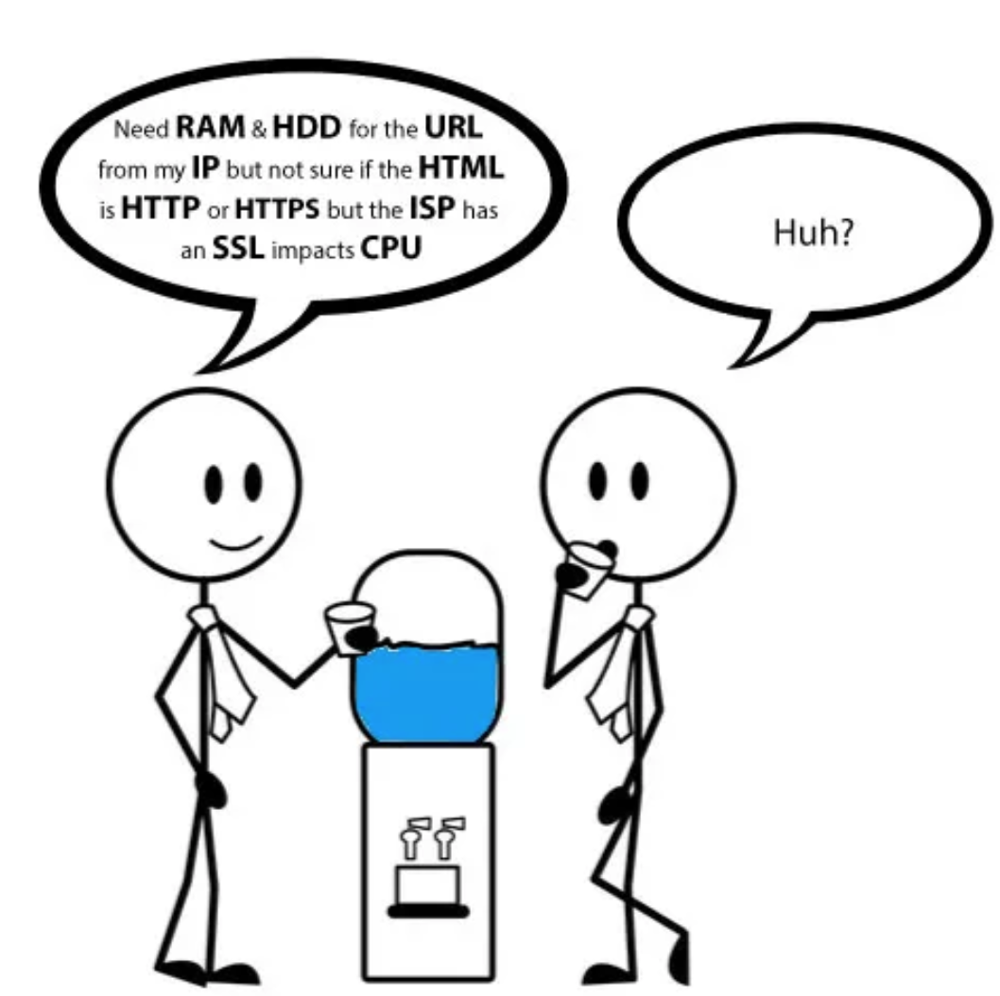

Sémantique et Interopérabilité
Masterclass pour débutants
Objectifs de la session
- Comprendre les bases de la sémantique et des ontologies
- Modéliser en OWL une logique de description
- Voir en quoi cela contribue à l'établissement de l'interopérabilité sémantique
Plan de la masterclass
- Introduction à la sémantique
- Modélisation sémantique avec OWL
- Conclusion
Introduction à la Sémantique
- Sémiotique, Sémantique, Pragmatique, Syntactique et Rhétorique
- Problèmes courants dans le langage naturel
- Connaissance, Information et données
- Problèmes courants concernant les données
- Ontologies
Sémiotique, Sémantique, Pragmatique, Syntactique et Rhétorique
Le triangle Sémiotique
Science générale des signes
- Signe : Élément porteur de sens
- Signifiant : Forme du signe
- Signifié : Concept associé

Sémiotique, Sémantique, Pragmatique, Syntactique et Rhétorique
La sémantique
La sémantique désigne l'étude du sens et de la signification des mots, des phrases, des symboles ou des signes dans un contexte donné.
- Signe : Élément porteur de sens
- Signifiant : Forme du signe
- Signifié : Concept associé

Sémiotique, Sémantique, Pragmatique, Syntactique et Rhétorique
La sémantique
Par exemple pour le langage naturel:
- Les mots renvoient à des objets réels dans le monde
- Attention aux homonymes
Sémiotique, Sémantique, Pragmatique, Syntactique et Rhétorique
La Syntactique
La syntactique (ou syntaxe) est l’étude des relations formelles entre les signes dans un système symbolique, sans se préoccuper de leur signification.

Sémiotique, Sémantique, Pragmatique, Syntactique et Rhétorique
La Pragmatique
- Sémantique : Étudie le sens littéral et abstrait des mots ou des phrases, indépendamment du contexte.
- Pragmatique :Analyse comment le contexte et les intentions façonnent la communication et le sens.
Exemple : Une même phrase peut avoir des sens différents selon la situation.

Sémiotique, Sémantique, Pragmatique, Syntactique et Rhétorique
Contexte, Dénotation et Connotation
- Contexte : Influence sur le sens
- Dénotation : Sens objectif
- Connotation : Sens subjectif
Illustration : Le mot "rose" peut désigner une fleur (dénotation) ou évoquer la romance (connotation).

Sémiotique, Sémantique, Pragmatique, Syntactique et Rhétorique
La Rhétorique
Qu'est-ce que la rhétorique ?
La rhétorique est l'art de bien parler et de convaincre un auditoire. Elle repose sur l'organisation et la force des arguments.
Les trois piliers de la persuasion
- Ethos : La crédibilité et l'autorité de l'orateur.
- Logos : La logique et la rationalité des arguments.
- Pathos : L'appel aux émotions du public.

Sémiotique, Sémantique, Pragmatique, Syntactique et Rhétorique
Extension au Monde Informatique
Il faut considérer:
- Ressource Identifiée (RI) en lieu de Référent
- Code en lieu de Symbole
- Modèle en lieu de concept
- Organisations de plus haut niveau
Pour la forme, on a des représentations duales
- pour la communication des humains d’une part,
- pour le traitement des machines d’autre part

Sémiotique, Sémantique, Pragmatique, Syntactique et Rhétorique
Concept vs. Graphe de concept
- Un concept n'est pas défini seul
- Graphe sémantique pour définir l'ensemble d'un domaine

Sémiotique, Sémantique, Pragmatique, Syntactique et Rhétorique
Communautés, Domaines et concepts multiples


- De nombreux graphes sémantiques
- Des domaines à interrelier pour communiquer et collaborer
Problèmes courants dans le langage naturel

Problèmes courants dans le langage naturel
Le cas courant de l'homonymie
Du fait des Homonymie, ne confondez pas le terme et le concept qui, lui, est lié au référent dans le monde réel, contrairement au terme(pas de lien direct)
Dans le langage naturel, de nombreux autres problèmes d'interprétation...

Problèmes courants dans le langage naturel
Autres problèmes courants dans le langage naturel
1. Ambiguïtés lexicales
- Homonymie : Mots avec plusieurs significations non liées (ex. "banque").
- Synonymie : Mots différents avec des significations proches (ex. "maison" et "demeure").
- Polysémie : Mots avec plusieurs significations liées (ex. "livre" : objet ou unité de poids).
2. Ambiguïtés contextuelles
- Syntactique : Plusieurs interprétations dues à la structure grammaticale (ex. "L'homme a vu la femme avec des jumelles").
- Pragmatique : Sens dépendant des intentions implicites (ex. "Peux-tu fermer la porte ?").
- Référentielle : Problèmes liés aux pronoms ou anaphores (ex. "Marie a dit à Julie qu'elle devait partir").
Problèmes courants dans le langage naturel
Autres sources de confusion
1. Complexités culturelles et linguistiques
- Variations régionales : Différences lexicales selon les régions (ex. "pain au chocolat" vs "chocolatine").
- Polysémie culturelle : Concepts chargés de significations spécifiques à une culture (ex. "liberté").
- Évolution linguistique : Mots changeant de sens avec le temps (ex. "passion" : souffrance vs enthousiasme).
2. Problèmes d'expression
- Métaphores et idiomes : Expressions non littérales (ex. "avoir les pieds sur terre").
- Jargon : Langage technique ou spécialisé incompréhensible pour les non-initiés (ex. "API").
- Non-dits : Implicatures ou tabous rendant le message implicite (ex. "Il n'est pas très efficace").
Connaissance, Information et données

Connaissance, Information et données
Qu'est ce que la connaissance
- La capacité mentale permettant à l'esprit d'assimiler un contenu objectif, c'est-à-dire une réalité indépendante de l'observateur, préalablement traduit en signes et en idées.
- C'est également le résultat de cette assimilation
- Elle représente une possession symbolique des choses et s'étend sur une infinité de niveaux.

Connaissance, Information et données
Qu'est ce que l'information
- Une partie de la connaissance
- Mais avoir une information sur un sujet ne signifie pas "connaître" ce sujet
- Plus on accumule d'informations sur un sujet, plus on le "connaît".
- La connaissance complète consiste à avoir le plus de facettes possible sur un sujet


Connaissance, Information et données
Qu’est ce que la donnée?
- Dans la conception philosophique de la connaissance
les données sont des éléments bruts,des faits ou observations sans interprétation, qui constituent la matière première pour l'acquisition du savoir. - Historiquement, dans le contexte des entreprises
la donnée était davantage liée à des notions de fichiers, bases de données ou enregistrements, sans nécessairement s’intéresser à son sens ou à son interprétation.
On constate des difficulé dans la communication à ce sujet entre les gestionnaires de la connaissance, les ontologques et les informaticiens
Connaissance, Information et données
La donnée dans la perspective des Systèmes d’Information
- Aujourd’hui, dans toutes les organisations, les idées circulent en permanence.
- Seules celles qui sont formalisées et qui ont une existence physique sont manipulables,exploitables et réutilisables.
- La donnée représente l’existence physique même d’une information.
- La donnée devient information lorsqu'elle véhicule un sens, en particulier lorsqu’elle est interprétée dans un contexte donné.

Connaissance, Information et données
La donnée dans le contexte de la connaissance
- Données : Ce sont des faits bruts et non interprétés, comme des chiffres ou des observations, qui manquent de contexte
- Information : Elle résulte de l'organisation et du traitement des données, donnant un sens à ces dernières grâce à leur contextualisation.
- Connaissance : Elle se forme lorsque l'information est comprise et intégrée, permettant d'en tirer des conclusions et d'appliquer des compétences.
- Sagesse : C'est l'utilisation éclairée de la connaissance pour prendre des décisions judicieuses, souvent basée sur l'expérience et le discernement.

Problèmes courants concernant les données
Problèmes courants concernant les données
Problèmes liés purement aux données
-
Hétérogénéité des formats
- Multiplicité des standards (CSV, XML, JSON, etc.).
- Difficulté à unifier des sources de données.
-
Manque de contexte
- Données isolées de leur origine ou finalité.
- Ex. : Une date sans préciser si elle correspond à un début ou une fin.
-
Qualité variable des données
- Données incomplètes, erronées ou obsolètes.
- Ex. : Bases clients mal synchronisées entre deux systèmes.

Problèmes courants concernant les données
Problèmes liés aux informations
-
Incohérences sémantiques
- Différences de terminologie entre organisations.
- Ex. : "Produit" désigne-t-il un bien ou un service ?
-
Fragmentation
- Informations éparpillées entre systèmes ou départements.
- Ex. : Un système CRM et une base ERP ne partagent pas les mêmes données clients.
-
Absence de structure commune
- Pas de modèle commun pour organiser les informations.
- Ex. : Deux entreprises définissent des KPI identiques de manière différente.

Problèmes courants concernant les données
Problèmes liés aux connaissances
-
Captation des connaissances tacites
- Les savoir-faire critiques restent souvent informels ou non documentés.
- Ex. : Un expert possède des informations clés non accessibles par ses collègues.
-
Perte de savoir-faire
- Départs d’employés ou absence de transfert de connaissances.
- Ex. : Une méthodologie propriétaire perdue après le départ d’un expert.
-
Incompatibilités culturelles
- Différences dans la manière dont les organisations interprètent et utilisent les connaissances.
- Ex. : Vision "court terme" vs. "long terme" dans les stratégies de partage.

Ontologies
Ontologies
L'ontologie n'est pas une notion nouvelle
et
précède l'ère informatique
Une discipline philosophique — une branche de la philosophie qui traite de la nature et de l'organisation de la réalité Science de l'Être (Aristote, Métaphysique, IV, 1)
Elle essaie de répondre aux questions suivantes :
- Qu'est-ce qui caractérise l'être ?
- En fin de compte, qu'est-ce que l'être ?
L’utilisation en linguistique des ontologies est notamment celle relative à la sémiotique et à la sémantique.
L'ontologie en linguistique touche à des questions fondamentales sur la manière dont le langage structure notre perception et notre description du monde.
Les théories vont de celles qui examinent la manière dont les catégories linguistiques correspondent à la réalité, à celles qui suggèrent que le langage façonne les réalités qu'il décrit.
De nombreux auteurs, souvent à l'intersection de la philosophie, de la linguistique et des sciences cognitives, ont contribué à cette réflexion, chacun offrant une perspective unique sur la manière dont le langage articule le monde des concepts et des réalités.

Ontologies
Qu'est-ce qu'une ontologie aujourd'hui ?
Une ontologie est une modélisation formelle d’un domaine de connaissance, qui capture les concepts, leurs relations, propriétés et règles. Elle permet de décrire de manière explicite et normée un savoir commun à une communauté.
Objectifs
- Structurer les données et assurer leur cohérence.
- Faciliter le raisonnement automatique et l’interopérabilité.
- Adresser les problèmes liés aux langages naturels.
- Adresser les problèmes relatifs aux données, informations et connaissances
Découpage
- Domaine : Concepts centraux partagés.
- Applications : Détails spécifiques pour un cas d’usage.
- Organisation : Terminologies propres à une entité.
Ontologies
Qu'est-ce qu'une bonne ontologie
On s'attend à ce qu'une ontologie soit
- Significative: tous les concepts considérés ont un référent
- Correcte: elle capture les connaissances des experts en la matière
- Redondance minimale: pas de synonymes non intentionnels
- Axiomatisation riche: descriptions (suffisamment) détaillées
Ontologies
Les divers usages
- Phase de conceptualisation pour le processus d'ingénierie logicielle
- Traitement du langage naturel
- Intelligence artificielle: base de connaissances avec raisonnement, IA Explicative
- Agrégation sémantique de données hétérogènes
Ontologies
Quelle logique?
Il existe de nombreuses logiques pour formaliser les régles
- Logique de description
- Logique de premier ordre
- Logique d'ordre supérieur
- Logique non classique (probabiliste, floue)
Le degré de formalisation varie considérablement
Une plus grande formalisation rend ls langages plus adaptés à l'automatisation
Ontologies
Logique et théorie des ensembles
Pour formaliser des connaissances, deux piliers sont fondamentaux :
- La logique : outil pour raisonner de manière formelle.
- La théorie des ensembles : structuration des concepts.
Ces deux disciplines fournissent des bases pour modéliser et automatiser des raisonnements.
Ontologies
Principes fondamentaux de la logique
La logique est un outil puissant pour exprimer des affirmations :
- Proposition : Une affirmation pouvant être vraie ou fausse.
- Connecteurs : ET (∧), OU (∨), NON (¬), implication (→).
Elle permet de vérifier des règles de manière rigoureuse.
Ontologies
Quantificateurs logiques
Les quantificateurs permettent de généraliser ou restreindre des propositions :
- Universel (∀) : "Pour tout". Exemple :
∀x (Humain(x) → Mortel(x)) - Existentiel (∃) : "Il existe". Exemple :
∃x (Chien(x) ∧ Noir(x))
Ces outils permettent de formaliser des règles générales ou spécifiques.
Ontologies
Concepts de base de la théorie des ensembles
La théorie des ensembles modélise des collections d'éléments :
- Ensemble : Une collection d'objets
(
A = {1, 2, 3}). - Appartenance :
x ∈ Asignifie quexappartient à l'ensembleA. - Opérations : Union (
A ∪ B), intersection (A ∩ B), différence (A - B).
Ontologies
Relations pour la théorie des ensembles
Une relation est un lien entre les éléments de deux ensembles (ou plus) :
- Définition : Une relation
Rest un sous-ensemble du produit cartésien de deux ensembles :R ⊆ A × B. - Exemple : Si
A = {1, 2}etB = {a, b}, une relationRpourrait être :R = {(1, a), (2, b)}.
Ontologies
Caractéristiques des relations dans la théorie des ensembles
Les relations peuvent avoir différentes propriétés :
- Réflexive : Tout élément est en relation avec
lui-même :
∀x ∈ A, (x, x) ∈ R. - Symétrique : Si
(x, y) ∈ R, alors(y, x) ∈ R. - Transitive : Si
(x, y) ∈ Ret(y, z) ∈ R, alors(x, z) ∈ R. - Antisymétrique : Si
(x, y) ∈ Ret(y, x) ∈ R, alorsx = y.
Ontologies
Types de relations dans la théorie de ensembles
Les relations peuvent être classifiées en fonction de leurs propriétés :
- Relation d'équivalence : Réflexive, symétrique et
transitive. Exemple : l'égalité (
=). - Relation d'ordre : Réflexive, antisymétrique et
transitive. Exemple : l'ordre (
≤). - Fonction : Relation où chaque élément de l'ensemble de départ est lié à un seul élément de l'ensemble d'arrivée.
Ontologies
Exemples pratiques de la théorie des ensembles
Applications concrètes des relations :
- Graphe orienté : Les arcs d’un graphe sont des relations entre sommets.
- Base de données : Une table relie des colonnes à travers des clés primaires et étrangères.
- Ontologies : Relations entre concepts pour modéliser des connaissances.
Ontologies
Logique et Théorie des Ensembles: Opérateurs Logiques : AND et OR
Les opérateurs logiques se traduisent en théorie des ensembles :
- AND (Intersection) : Les éléments communs à deux
ensembles.
A ∩ B. - OR (Union) : Les éléments présents dans au moins un
des ensembles.
A ∪ B.
Ces interactions permettent de modéliser des relations logiques.
Ontologies
Logique et Théorie des Ensembles: Définition Extensive des Ensembles
Les ensembles peuvent être définis de manière plus complexe en utilisant des quantificateurs et des relations. Voici quelques exemples :
- Exemple 1 (Union avec quantificateur) : L'ensemble
des éléments
xqui sont dansXou dansY, et pour lesquels il existe un élémentytel queR(x, y)(une relation), peut être écrit comme :
{x | (x ∈ X ∨ x ∈ Y) ∧ ∃y (R(x, y))}. - Exemple 2 (Quantificateur universel avec relation)
: L'ensemble des éléments
xpour lesquels tous les élémentsydans l'ensembleYsatisfont une relationR(x, y), peut être exprimé comme :
{x | ∀y (y ∈ Y → R(x, y))}. - Exemple 3 (Quantificateurs multiples avec relation)
: L'ensemble des éléments
xtels qu'il existe unyet unzoùxest en relation avecyetz:
{x | ∃y ∃z (R(x, y) ∧ S(x, z))}.
Ces exemples montrent comment les ensembles peuvent être décrits en combinant des relations logiques et des quantificateurs (existence et universalité), ce qui permet de modéliser des situations plus complexes.
Ontologies
Logique d'ordre supérieur
La logique d'ordre supérieur étend la logique classique :
- Elle permet de raisonner sur des ensembles d'ensembles.
- Exemple : "Tous les ensembles qui contiennent un élément commun avec A".
- Elle est plus expressive mais ne permet pas toujours un raisonnement automatisé.
Courant pour les modèles de systèmes
A : élément de l'ensemble
rouge.
Rouge : sous-ensemble de bleu.
Ontologies
Logique floue
La logique floue étend la logique classique avec des valeurs de vérité entre 0 et 1 :
- 1 (Vrai) : Certitude totale.
- 0 (Faux) : Aucune vérité.
- Entre 0 et 1 : Degré de probabilité ou de pertinence.
Exemple : "Il est 70% probable qu'il pleuve".
Utilisé par exemple pour la robotique
Exemple d'une vérité partielle : 0.7.
Ontologies
Quels langages?
Il existe de nombreuses langages de description d'ontologie.
Mais tous n'ont pas la même expressivité ni la même utilité, en particulier en ce qui concerne le support du raisonnement automatisé.
Parmi les langages les plus utilisés, on peut citer
- Langage(s) naturel(s)
- UML, RDF, SKOS, Prolog, OWL (Lite, Full, DL) ...
On souhaite un langage permettant le raisonnement sur la base de la logique descriptive
- →OWL DL
Modélisation sémantique avec OWL
OWL (Ontology Web Language)
Qu’est-ce que OWL ?
Un langage de modélisation d'ontologie
- créé pour spécifier explicitement une conceptualisation
- standardisé par W3C pour le Web sémantique et les données liées
- basé sur la logique de description et la théorie des ensembles
- utilisé pour modéliser des connaissances complexes
- adapté pour fédérer les ontologies de plusieurs domaines
- supporter par de nombreux outils, en particulier Protégé
Modélisation sémantique avec OWL
Le logiciel Protégé
Protégé est un logiciel open-source largement utilisé pour la création, l'édition et la gestion des ontologies, particulièrement celles basées sur le langage OWL2 (Web Ontology Language).
- Création d'ontologies : Protégé permet de définir des classes, des relations (propriétés), et des individus, pour formaliser un domaine de connaissance sous forme d'ontologie.
- Support OWL2 : Il offre un support complet pour OWL2, le standard recommandé pour la formalisation des ontologies sur le web. Cela inclut des fonctionnalités pour la création de classes, la définition de restrictions et de relations, et l'utilisation de raisonnement logique.
- Raisonnement : Protégé peut intégrer des moteurs de raisonnement (comme Pellet ou HermiT) pour inférer de nouvelles connaissances à partir des axiomes définis dans l'ontologie.
- Interface graphique : Protégé dispose d'une interface graphique conviviale permettant aux utilisateurs de visualiser et manipuler les concepts de l'ontologie, sans nécessiter de connaissances approfondies en programmation.
- Export et partage : Le logiciel permet d'exporter les ontologies en formats standardisés (par exemple, RDF/XML, Turtle), facilitant ainsi leur partage et leur intégration dans des systèmes externes.
Il est très utilisé dans la recherche, le développement d'applications sémantiques, et dans des domaines comme l'intelligence artificielle, la gestion des connaissances, et le web sémantique.
Modélisation sémantique avec OWL
Syntaxe Manchester
La syntaxe Manchester est un moyen simple et lisible de définir des axiomes et des classes dans une ontologie, utilisée dans Protégé pour rendre la logique des descriptions (DL) plus accessible sans nécessiter une connaissance approfondie de la notation formelle.
- Accessibilité : La syntaxe Manchester permet de décrire des concepts et des relations de manière textuelle et intuitive, ce qui facilite la création d'ontologies pour les utilisateurs non spécialistes de la logique formelle.
- Concepts et relations : Elle permet de définir des classes (concepts) et des relations entre ces classes de manière naturelle, en utilisant des constructions comme and, or, not, etc.
- Exemple de syntaxe : Pour définir une classe de
personnes ayant un âge supérieur à 18 ans et étant des étudiants, on
pourrait utiliser la syntaxe suivante :
Person and (hasAge value > 18) and (isStudent). - Représentation de restrictions : La syntaxe permet
également d'exprimer des restrictions sur les propriétés, comme des
cardinalités ou des relations entre classes. Par exemple :
Person and (hasChild some Animal)définit une personne ayant un enfant de type Animal. - Facilite l'édition : Protégé offre un éditeur avec une interface conviviale qui génère automatiquement la syntaxe Manchester à partir des descriptions graphiques, rendant la modélisation plus fluide.
La syntaxe Manchester simplifie le travail de formalisation des ontologies en Description Logic, tout en offrant suffisamment de puissance pour modéliser des relations complexes dans le domaine des connaissances.
Modélisation sémantique avec OWL
Viewer OWL
Le viewer est un utilitaire de visualisation d'ontologie OWL qui reprende et complète les symboles proposés par Protégé pour OWL.
- Classes, properties et individus : visualisation sous forme de noeud avec les symboles utilisés par Protégé
- Caractéristiques des propriétés: les caractéristiques sont visibles sour forme de symboles
- Relations entre individus, classes et propriétés : type,domain, range, subsomption, équivalence...
- Structure d'une ontologie et imports : Sous formes d'éléments imbriqués.
Il s'agit d'un prototype permettant des visualisations interactives intégrables dans des pages Web
Construire l'interopérabilité sémantique avec OWL
Tableau de correspondance Syntaxe Manchester/DL
| Logic | Théorie des Ens. | Manchester | Description | Example |
|---|---|---|---|---|
| AND (∧) | Intersection (∩) |
A and B
|
Les éléments communs entre deux ensembles ou concepts. | A ∩ B (ex. : "Person and Student") |
| OR (∨) | Union (∪) |
A or B
|
Les éléments appartenant à au moins un des ensembles ou concepts. | A ∪ B (ex. : "Person or Animal") |
| Quantificateur existentiel (∃) | Existence d'un élément | hasChild some Person | Il existe au moins un élément dans la relation spécifiée. | ∃ hasChild.Person (ex. : "Une personne a un enfant qui est une personne.") |
| Quantificateur universel(∀) | Tous les éléments |
hasParent only Person
|
Tous les éléments satisfont la relation spécifiée. | ∀ hasParent.Person (ex. : "Toutes les personnes ont un parent qui est une personne.") |
| NOT (¬) | Complément |
not A
|
Tous les éléments qui ne sont pas dans l'ensemble ou le concept spécifié. | ¬A (ex. : "Not Student" pour représenter tout ce qui n'est pas un étudiant.) |
Principe des Contraintes Induites par des relations
Pour tirer partie de la logique descriptive et des moteurs d'inférence
- Classification: Classes et sous classes
- Propriétés object:propriétés, sous propriété, inverse, domain, range, assymétrie
- Individus:déclaration explicite de liens
- Activation moteur d'inférence
- Queries DL
=> réponses à partir des déclarations explicites et de l'application des règles pour INFERER

Concept OWL : some
Tout individu appartenant à une classe doit être relié à au moins un individu d'une autre classe via une propriété donnée.
- Exemple :
ProduitCommercial SousClasseDe : aCodeGS1 some CodeGTIN - Signification : Chaque produit commercial possède au moins un code GS1, tel qu'un GTIN.

Concept OWL : only
Tout individu d'une classe ne peut être relié qu'à des individus d'une autre classe via une propriété donnée.
- Exemple :
EntrepriseCertifiee SousClasseDe : utiliseStandard only StandardGS1 - Signification : Une entreprise certifiée n'utilise que des standards GS1.

Concept OWL : min
Un individu d'une classe doit être relié à un nombre minimal d'individus d'une autre classe via une propriété donnée.
- Exemple :
Palette SousClasseDe : contientProduit min 10 ProduitCommercial - Signification : Une palette contient au moins 10 produits commerciaux identifiés par un GTIN.

Concept OWL : max
Un individu d'une classe ne peut être relié qu'à un nombre maximal d'individus d'une autre classe via une propriété donnée.
- Exemple :
Colis SousClasseDe : contientProduit max 1 ProduitLourd - Signification : Un colis peut contenir au maximum un produit lourd.

Concept OWL : exactly
Un individu d'une classe doit être relié à un nombre exact d'individus d'une autre classe via une propriété donnée.
- Exemple :
ProduitUnitaire SousClasseDe : aCodeGS1 exactly 1 CodeGTIN - Signification : Chaque produit unitaire possède un unique GTIN.

Concept OWL : value
Un individu d'une classe est directement relié à une valeur spécifique via une propriété donnée.
- Exemple :
ProduitExemple SousClasseDe : aCodeGS1 value "1234567890123" - Signification : Ce produit possède un GTIN spécifique : "1234567890123".

Concept OWL : self
Un individu d'une classe est en relation avec lui-même via une propriété donnée.
- Exemple :
ProduitAutoIdentifiable SousClasseDe : aIdentifiantGS1 self - Signification : Un produit auto-identifiable peut se désigner lui-même grâce à son identifiant GS1.

Conclusion
Résumé des points clés
- Importance de la sémantique
- OWL pour l’intégration
- Rôle des ontologies de haut niveau
Questions et Réponses
Posez vos questions pour clarifier les concepts.
Construire l'interopérabilité sémantique avec OWL
Tableau de correspondance Syntaxe Manchester/DL
| Logique | Caractéristiques | Exemple | Formalisation (Manchester) | \(\mathcal{A}\mathcal{L}\) | Attributive language: permet la négation atomique, l'intersection de concepts, restrictions universelles, quantification existentielle limitée | Concepts "Animal" et "Plante" peuvent être négativement combinés. | Animal and not Plant |
|---|---|---|---|
| \(\mathcal{F}\mathcal{L}\) | Frame-based language: permet l'intersection de concepts, les restrictions universelles, quantification existentielle limitée, restrictions de rôle | Un "Personne" doit être "Employé" et avoir un rôle "Manager". | Person and Employee and hasRole some Manager |
| \(\mathcal{E}\mathcal{L}\) | Existential language: permet l'intersection de concepts, les restrictions existentielles | Un "Animal" doit exister dans une classe spécifique. | Animal and existsIn some Species |
| \(\mathcal{A}\mathcal{L}\mathcal{C}\) | Un langage de logique description attributive, utilisé pour définir des concepts et des relations dans une ontologie. Il permet de modéliser des ontologies en combinant des concepts, des relations et des restrictions. | Animal ⊓ (∃a: attr) : Un concept "Animal" avec une restriction existencielle sur la relation "attr". | Class: Animal SubClassOf: hasAttr some L or hasAttr some C |
| \(\mathcal{S}\mathcal{h}\mathcal{O}\mathcal{I}\mathcal{Q}\) | ShOIQ est une extension d'ALC qui ajoute des rôles inverses, des rôles nominaux, et des restrictions cardinales. Cela permet de spécifier des concepts plus complexes, y compris l'utilisation d'individus spécifiques dans les axiomes. | ShOIQ: Class {hasPart some A} | Class: ClassName SubClassOf: hasPart some A hasPart exactly 2 B hasPart some individu1 hasPart inverse some C |
| \(\mathcal{S}\mathcal{h}\) | Les lettres "Sh" dans ShOIQ font référence à la possibilité d'utiliser des rôles nominaux, c'est-à-dire des rôles qui relient des individus spécifiques au lieu de concepts abstraits. | hasPart some {A} | aPourStatutMarital some {"Célibataire" , "Marié"} |
| \(\mathcal{O}\) | La lettre "O" dans ShOIQ indique que l'on peut utiliser des rôles inversés. Cela permet de définir des relations dans la direction opposée (inverse) d'un rôle. | hasPart inverse some {A} | inverse (estLeFilsDe) some {a} |
| \(\mathcal{I}\) | La lettre "I" dans ShOIQ fait référence à l'utilisation de restrictions de cardinalité, c'est-à-dire le nombre d'occurrences d'un rôle ou d'une relation qu'un individu peut avoir. | ≥2 hasPart some A | estLaMereDe some Fille |
| \(\mathcal{Q}\) | La lettre "Q" dans ShOIQ permet de spécifier des restrictions sur les individus liés par un rôle (rôles nominaux), ce qui permet une plus grande expressivité pour les relations entre les individus. | ≥1 hasPart some {a} | estLaMereDe min 1 {a, b, c, d, e} |
| \(\mathcal{N}\) | Composante Numérique : permet de définir des restrictions sur des valeurs numériques ou temporelles, incluant des intervalles, des égalités, et des comparaisons de valeurs. | ≥ 1 R.value ≥ 10 && value ≤ 20 | Class: Personne SubClassOf: hasAge min 1 hasAge >= 10 hasAge <= 20 |
| ≥n R | La restriction ≥n spécifie que pour un rôle donné R, un individu doit avoir au moins n relations de type R avec d'autres individus. | ≥2 hasPart some {A} | |
| R− | Le rôle inversé (R−) permet de définir une relation dans la direction opposée d'un rôle donné. Par exemple, un rôle "hasPart" inversé pourrait être "isPartOf". | isPartOf some {A} | ObjectProperty: estUnParentDe InverseOf: estUnEnfantDe |
| {a} | Les rôles nominaux spécifient un individu spécifique dans une relation. Par exemple, "hasPart some {John}" fait référence à la relation où un objet a une partie spécifiquement liée à un individu nommé "John". | hasPart some {John} | estLeFilsDe some {a} |
| R o S | La composition de rôles (R o S) permet de définir une relation complexe qui combine deux rôles en une seule relation.Aussi appelé chaîne. | hasPart o isPartOf | estLaMereDe some (estLaFilleDe some) |
| A ≡ B | L'axiome "A ≡ B" définit deux classes A et B comme étant équivalentes. Cela signifie que tout ce qui appartient à A appartient aussi à B et vice versa. | A ≡ B | Class: NéApres2000 EquivalentTo: aPourAnneeDeNaissance some xsd:dateTime[>= "2000-01-01T00:00:00"^^xsd:dateTime] |
| C ⊆ D | Le symbole "⊆" indique qu'un concept C est un sous-ensemble d'un autre concept D, ce qui signifie que tout ce qui appartient à C appartient aussi à D. | C ⊆ D | Class: Fille SubClassOf:Enfant |
| ABox | La boîte A (Assertion Box) contient des assertions sur les individus, c'est-à-dire des faits concernant les instances d'une ontologie. Cela inclut des informations comme l'appartenance d'un individu à un concept ou les relations entre individus. | Personne(Pierre) : Pierre est une instance de la classe "Personne". | Individual: d Types: Fille |
| TBox | La boîte T (Terminology Box) contient des axiomes sur les concepts, c'est-à-dire des définitions qui décrivent la structure de l'ontologie, comme les relations entre concepts ou des équivalences entre concepts. | Personne ⊑ Humain : Toute instance de "Personne" est aussi une instance de "Humain". | Class: Fille SubClassOf:Enfant |
| RBox | La boîte R (Role Box) contient des axiomes sur les rôles ou relations entre les individus, comme les hiérarchies de rôles ou les propriétés des rôles (transitivité, réflexivité, etc.). | pèreDe ≡ inverse(mèreDe) : La relation "pèreDe" est l'inverse de la relation "mèreDe". | ObjectProperty: estUnParentDe InverseOf: estUnEnfantDe |
| Rôle | Un rôle est une relation entre deux individus dans l'ontologie. Les rôles peuvent être utilisés pour exprimer des connexions entre les concepts, telles que des propriétés ou des relations de type "est un parent de" ou "a une adresse". | pèreDe(Pierre, Jacques) : "Pierre" est le père de "Jacques". | ObjectProperty: estLePereDe |
| Classe définie par un ensemble extensif d'individus | Une classe peut être définie comme l'ensemble des individus qui satisfont certaines conditions ou propriétés. Cela peut inclure des définitions explicites comme {a1, a2, ..., an}, où chaque élément appartient à un groupe spécifique d'individus. | Personne ⊓ {Pierre, Jacques} : La classe "Personne" peut être définie par l'ensemble des individus {Pierre, Jacques}. | {a,b,c,d,e,f} |
| Ensemble de valeurs | Un ensemble de valeurs représente un ensemble d'éléments que l'on peut attribuer à une propriété ou un rôle. Par exemple, un ensemble de valeurs pourrait être l'ensemble des couleurs possibles qu'un objet peut avoir. | Couleur ⊑ {Rouge, Bleu, Vert} : La classe "Couleur" est définie par l'ensemble des valeurs possibles {Rouge, Bleu, Vert}. | {"Célibataire" , "Divorcé" , "Marié" , "Veuf"} |
| ⊥ | Le concept de base (ensemble vide, représente une contradiction). | ⊥ : Un concept vide, aucun individu n'en fait partie. | owl:Nothing |
| ⊤ | Le concept universel (ensemble universel). | ⊤ : Le concept universel, toutes les instances y appartiennent. | owl:Thing |
| A | Un concept atomique (une classe de base d'individus). | A : Un concept atomique comme "Personne". | Class: Personne |
| ¬C | La négation du concept C (complément). | ¬Personne : Un concept qui représente tout ce qui n'est pas une "Personne". | not Personne |
| C ∩ D | L'intersection des concepts C et D (les deux concepts). | Enfant ⊓ Homme : L'intersection de "Enfant" et "Homme". | Homme and Enfant |
| C ∪ D | L'union des concepts C et D (l'un ou l'autre concept). | Fille ⊔ Fils : L'union de "Fille" et "Fils". | Fille or Fils |
| ∃R.C | Restriction existentielle (il existe une relation R avec le concept C). | ∃a: Enfant : Il existe une relation "a" (par exemple, "est enfant de") avec le concept "Enfant". | estUnEnfantDe some |
| ∀R.C | Restriction universelle (chaque relation R doit satisfaire le concept C). | ∀a: Enfant : Chaque relation "a" (par exemple, "a enfant de") doit mener à un "Enfant". | ObjectProperty: estUnParentDe Range: Enfant |
| ≤1 R | Fonctionnalité (au plus un R). | ≤1 a: Enfant : "Il existe au plus un enfant" pour chaque instance. | estUnEnfantDe max 1 |
| ≥n R, ≤n R | Restrictions numériques non qualifiées (au moins/au plus n relations R). | ≥2 a: Enfant : "Il existe au moins deux relations "a" de type "Enfant". | estUnEnfantDe min 2 |
| ≥n R.C, ≤n R.C | Restrictions numériques qualifiées (au moins/au plus n relations R vers le concept C). | ≥2 a: Enfant ⊓ Homme : "Il existe au moins deux enfants et chaque enfant est un Homme". | estUnEnfantDe min 2 and Homme |
| {a} ou {a1, ..., an} | Nominales (un individu spécifique ou un ensemble d'individus). | {Pierre} : Un concept nomminal où "Pierre" est un individu spécifique. | {a} |
| R— | Inverse du rôle. | pèreDe— : L'inverse de la relation "pèreDe", c'est-à-dire "enfantDe". | ObjectProperty: estUnParentDe InverseOf: estUnEnfantDe |
| R ∩ S | Intersection des rôles. | pèreDe ⊓ mèreDe : Un individu qui est à la fois le "pèreDe" et le "enfantDe". | Pere and Fils |
| R ∪ S | Union des rôles. | pèreDe ⊔ mèreDe : Un individu qui est soit le "pèreDe" soit le "mèreDe". | Pere or Mere |
| ¬R | Complément du rôle. | ¬pèreDe : Le complément de la relation "pèreDe", c'est-à-dire "pas pèreDe". | not Pere |
| R o S | Chaîne de rôles (composition). | pèreDe o parentDe : La relation composée entre "pèreDe" et "parentDe". | ObjectProperty: aPourPetitsEnfants SubPropertyChain: estUnParentDe o estUnParentDe |
| R* | Fermeture réflexive-transitive. | pèreDe* : La relation "pèreDe" avec sa fermeture réflexive-transitive (inclut les ancêtres). | ObjectProperty: estDeLaMemeFratrieQue Characteristics: Transitive |
| id(C) | Identité du concept. | id(Personne) : La relation d'identité pour le concept "Personne". | - |
| TBox vide | Aucune définition de concept n'est présente. | - | - |
| A ≡ C | TBox acyclique : A est équivalent à C ; pas de cycles autorisés. | Personne ≡ Humain : "Personne" est équivalent à "Humain". | - |
| C ⊆ D | TBox générale : le concept C est un sous-ensemble du concept D. | Personne ⊆ Humain : "Personne" est un sous-ensemble de "Humain". | - |
| Tr(R) | Transitivité du rôle. | Tr(pèreDe) : La relation "pèreDe" est transitive. | - |
| R ⊆ S | Hiérarchie des rôles : le rôle R est un sous-ensemble du rôle S. | pèreDe ⊆ parentDe : La relation "pèreDe" est un sous-ensemble de "parentDe". | ObjectProperty: aPourPetitsEnfants SubPropertyOf: estLaFamilleDe |
| R o S ⊆ R | Inclusions complexes de rôles. | pèreDe o parentDe ⊆ pèreDe : Une chaîne de rôles "pèreDe" et "parentDe" est un sous-ensemble de "pèreDe". | - |
| s | Caractéristiques supplémentaires des rôles. | - | - |